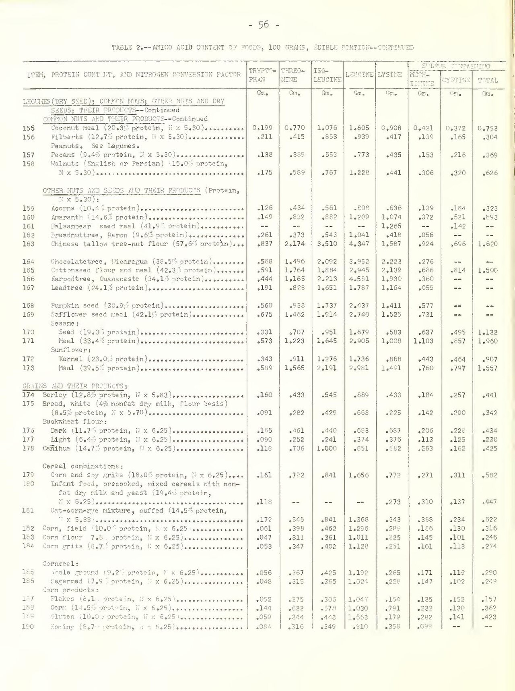
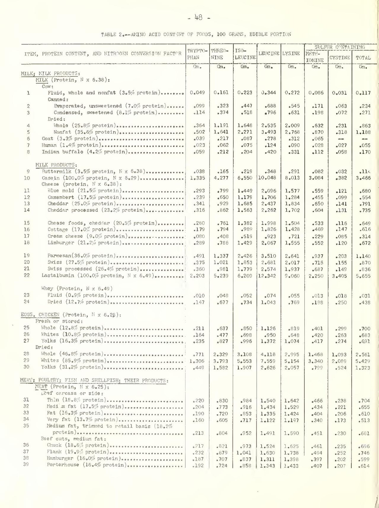

Página 6 · Síndrome pré-menstrual e síndrome disfórica pré-menstrual
Dizer que mudar hábito não adianta é errado — e cada medida tem um alvo
"Mudanças no estilo de vida não trarão benefícios."
Afirmar isso é incorreto — as mudanças de hábito melhoram os sintomas, e na síndrome pré-menstrual é justamente por elas que se começa.
Não existe droga que sirva a todas — e por que isso muda a consulta
A regra-mãe da terapêutica deste tema é dura e libertadora: nenhuma medida terapêutica específica é eficaz para tratar todas as pacientes. Não há droga que resolva o quadro inteiro em todo mundo. Por isso o tratamento é direcionado aos sintomas e ao prejuízo específico na qualidade de vida daquela paciente — não é receita de bolo. A conduta abre por uma pergunta só: o que, nesta paciente, atrapalha? E o que melhora a qualidade de vida são as mudanças nos hábitos de vida — é por elas que se começa.
Atividade física: a dose terapêutica e o piso de saúde
A prescrição é objetiva: atividade física três vezes por semana, em torno de 30 minutos. Essa dose cabe dentro da faixa usada nos estudos de síndrome pré-menstrual (sessões de 20 a 90 minutos, 1 a 5 vezes por semana) e é o que se cobra como mínimo terapêutico. O que a atividade física entrega é uma lista com nome: alívio de estresse e de irritabilidade, melhora do padrão do sono, melhora da capacidade cardiorrespiratória e melhora do tônus muscular — ela ataca simultaneamente o eixo afetivo e o condicionamento geral. 3 × 30 min somam 90 minutos por semana, abaixo do piso geral de atividade física para adultos (150 a 300 minutos semanais de intensidade moderada, ou 75 a 150 de vigorosa) — como orientar atividade física é conduta em toda paciente, sempre, o número de saúde geral é o alvo maior. E a evidência específica para síndrome pré-menstrual é de qualidade baixa (recomendação condicional); o benefício sistêmico é que é consistente.
Dieta: hipossódica e diurética, contra a retenção
A orientação é dieta hipossódica e/ou com substâncias diuréticas, e o alvo é nominal: melhorar a distensão abdominal e a retenção hídrica — exatamente o mecanismo que explica os sintomas somáticos. Aqui a conduta não é genérica: ela persegue o mesmo fenômeno que o diurético vai perseguir com fármaco, um degrau acima. Quem entendeu por que a mama dói, o abdome distende e o tornozelo incha entende por que reduzir sal muda alguma coisa.
Triptofano: comer o precursor da serotonina
Estimular o consumo de substâncias ricas em triptofano tem lastro fisiopatológico direto: o triptofano é o precursor da serotonina — o mesmo neurotransmissor que aparece com destaque na fisiopatologia e que o tratamento medicamentoso vai perseguir. Alimentos ricos em cacau são ricos em triptofano, e a orientação existe por causa da via metabólica. A própria literatura reforça o argumento pelo avesso: a depleção de triptofano exacerba os sintomas em quem tem o quadro. Dieta e droga, nesse ponto, apontam para o mesmo alvo.
O que reduzir: carne vermelha, cafeína, açúcar e álcool
A outra metade da orientação dietética é de redução: orientar menos carne vermelha, menos alimentos ricos em cafeína e menos alimentos ricos em açúcar. A restrição ao álcool também é importante. São fatores que pioram o quadro — e vale registrar que a lista de reduções costuma ser mais difícil de sustentar do que a de acréscimos, o que faz da pactuação com a paciente parte da conduta, não um detalhe.
Conversa que trata — e o suplemento que tem recomendação
As intervenções psicossociais não medicamentosas têm papel importante nas pacientes com maior acometimento por sintomas específicos — e vale dar a elas o nome e o peso corretos. A modalidade com evidência é a terapia cognitivo-comportamental, que a ACOG (Clinical Practice Guideline nº 7, dez/2023) classifica como recomendação forte para sintomas afetivos — e que o RCOG Green-top nº 48, 2ª edição (fev/2017) coloca como opção de rotina, grau A: a mesma força atribuída aos inibidores de recaptação de serotonina e ao contraceptivo combinado. Um ensaio de referência mostrou que a terapia tem resposta mais lenta que a fluoxetina, mas melhor manutenção do efeito em um ano. Isso não contradiz a conduta da forma grave (em que psicoterapia isolada não basta) — a abordagem é multimodal: conversa e droga, cada uma com sua curva. Por fim, o suplemento que de fato tem recomendação: cálcio, 1.000 a 1.200 mg/dia (recomendação condicional), com ensaio clínico mostrando redução de afeto negativo, retenção hídrica, desejo por alimentos e dor. Se a banca perguntar qual suplemento tem recomendação na síndrome pré-menstrual, a resposta é cálcio — não vitamina B6, não vitamina C.
| Medida | O que ela ataca |
|---|---|
| Atividade física 3×/semana × ~30 min | estresse · irritabilidade · sono · capacidade cardiorrespiratória · tônus muscular (piso geral de saúde: 150-300 min/semana) |
| Dieta hipossódica e/ou com substâncias diuréticas | distensão abdominal · retenção hídrica |
| Alimentos ricos em triptofano (cacau) | precursor da serotonina |
| Reduzir carne vermelha, cafeína e açúcar; restringir álcool | fatores que pioram o quadro |
| Terapia cognitivo-comportamental | sintomas afetivos — recomendação forte |
| Cálcio 1.000-1.200 mg/dia | o suplemento com recomendação formal (condicional) |

A — sementes, oleaginosas e cereais
B — laticínios, ovos e carnesO dado se lê na coluna TRYPTOPHAN, imediatamente à direita do nome do alimento; a unidade impressa é g por 100 g, e multiplicar por 1.000 converte em mg/100 g. Na tabela vegetal aparecem, por exemplo, semente de abóbora com 560 mg/100 g, girassol com 343 mg/100 g, gergelim com 331 mg/100 g, cevada com 160 mg/100 g, pão branco com 91 mg/100 g e farinha de milho com 47 mg/100 g; na tabela animal, leite fluido tem cerca de 49 mg/100 g, ovo inteiro 211 mg/100 g, cheddar 341 mg/100 g e parmesão 491 mg/100 g. Esses valores ancoram a ordem de grandeza e a relação bioquímica — o triptofano é precursor da serotonina —, mas não se deve confundir teor absoluto por 100 g com dose por porção ou com disponibilidade cerebral: a competição pelo transporte na barreira hematoencefálica impede concluir que "mais triptofano no alimento" produza proporcionalmente mais serotonina no sistema nervoso central. A publicação é histórica, de 1957, e serve à comparação visual; valores atuais e produtos processados específicos podem variar.
Orr ML, Watt BK. Amino Acid Content of Foods. Home Economics Research Report No. 4. U.S. Department of Agriculture, Agricultural Research Service; 1957, p. 48 e 56. Domínio público — obra do Governo Federal dos Estados Unidos. Digitalização via Wikimedia Commons.
Quiz — fixação
Sobre o manejo não medicamentoso dos distúrbios pré-menstruais, assinale a alternativa incorreta:
- Gabarito C. É o inverso do que a evidência e a prática mostram: as mudanças de hábito melhoram os sintomas e são o primeiro degrau do tratamento na síndrome pré-menstrual — o medicamento fica para o refratário.
- A. está correta e é a lista nominal do que o exercício entrega, na dose de 3 sessões semanais de cerca de 30 minutos.
- B. está correta e explicita o alvo: o mesmo mecanismo de retenção hídrica lútea que explica mastalgia, distensão e edema.
- D. está correta e é a única orientação dietética com lastro em neurotransmissor: triptofano é precursor da serotonina, e a depleção de triptofano piora o quadro.
- Por que cair na (A) ou (D). quem lê "assinale a incorreta" no automático marca a alternativa que parece mais "simples demais para ser critério" — e as três verdadeiras são justamente as que soam como conselho. A âncora é lembrar que cada uma delas tem alvo fisiopatológico nomeado, o que as tira do terreno do conselho genérico.
Entre as opções abaixo, o suplemento com recomendação formal na diretriz vigente da ACOG (CPG nº 7, dez/2023) para sintomas da síndrome pré-menstrual é:
- Gabarito B. O cálcio, 1.000-1.200 mg/dia, tem recomendação condicional na ACOG CPG nº 7 (dez/2023), com ensaio clínico mostrando redução de afeto negativo, retenção hídrica, desejo alimentar e dor.
- A. a vitamina C não participa da fisiopatologia nem da terapêutica do quadro — é distrator fabricado, e funciona porque ocupa o lugar mental dos nutrientes que de fato entram (cálcio/vitamina D, B6, magnésio).
- C. o ferro tem indicação em anemia ferropriva, condição diferente e sem relação com o critério pré-menstrual — a associação vem apenas de "menstruação/perda de sangue".
- D. o ácido fólico tem indicação periconcepcional, outro contexto inteiramente.
- Por que cair na (C). o cenário "mulher, ciclo menstrual, sintoma cíclico" evoca reposição de ferro por automatismo; o antídoto é perguntar qual alvo o suplemento atacaria no quadro em questão — e retenção hídrica, humor e dor não são alvos de ferro.
Quando o hábito não resolve, a pergunta não é "qual droga da síndrome pré-menstrual" — é outra, e ela muda a receita inteira: qual sintoma dela atrapalha?